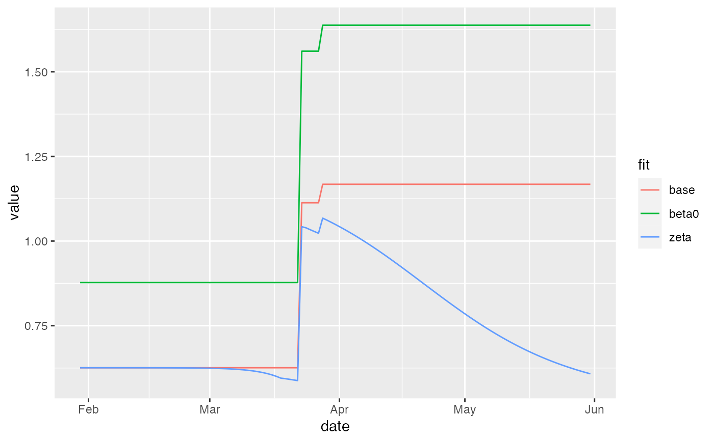

make forecasts from sim
# S3 method for fit_pansim
predict(
object,
end_date = NULL,
stoch = NULL,
stoch_start = NULL,
keep_vars = c("H", "ICU", "death", "hosp", "incidence", "report", "cumRep",
"newTests/1000"),
ensemble = FALSE,
new_params = NULL,
Sigma = NULL,
scale_Sigma = 1,
...
)
# S3 method for fit_pansim
plot(
x,
predict_args = NULL,
data = NULL,
break_dates = NULL,
dlspace = 1,
limspace = 10,
add_tests = FALSE,
add_ICU_cap = FALSE,
mult_var = NULL,
directlabels = TRUE,
log = TRUE,
log_lwr = 1,
...
)a fitted object
ending date for sim
stochasticity
stoch starting date
...
run ensemble?
parameters to update in base parameters (e.g. adding stochastic parameters)
covariance matrix
inflate/deflate covariance matrix
extra args (passed to forecast_ensemble)
a calibrated object (result from calibrate) or a prediction (from predict.fit_pansim)
additional arguments to pass to predict
original time series data
breakpoints
spacing for direct labels (not working)
extra space (in days) to add to make room for direct labels
plot newTests/1000?
include horizontal lines showing ICU capacity?
variable in data set indicating multiple forecast types to compare
use direct labels?
use a log10 scale for the y axis?
lower limit when using log scale
pp1 <- predict(ont_cal1, keep_vars="Rt")
#> Warning: specifying params_timevar with Relative_value is deprecated: auto-converting (reported once per session)
## example of hacking params
ont_cal2 <- ont_cal1
ont_cal2$forecast_args$base_params["zeta"] <- 4
pp2 <- predict(ont_cal2, keep_vars="Rt")
#> Warning: specifying params_timevar with Relative_value is deprecated: auto-converting (reported once per session)
## if zeta is fitted probably need to hack x$mle2@coef, e.g.
ont_cal3 <- ont_cal1
## increase beta0 (from -0.34) rather than
## mess with zeta, since phenom het isn't
## estimated in this fit
ont_cal3$mle2@fullcoef["params.log_beta0"] <- 0
pp3 <- predict(ont_cal3, keep_vars="Rt")
#> Warning: specifying params_timevar with Relative_value is deprecated: auto-converting (reported once per session)
pp <- dplyr::bind_rows(base=pp1,zeta=pp2,beta0=pp3, .id="fit")
if (require("ggplot2")) {
ggplot(pp,aes(date,value,colour=fit))+geom_line()
}
#> Loading required package: ggplot2
#>
#> Attaching package: ‘ggplot2’
#> The following object is masked from ‘package:McMasterPandemic’:
#>
#> %+%

if (FALSE) {
## non-pos-def vcov ... ???
predict(ont_cal_2brks,ensemble=TRUE)
}